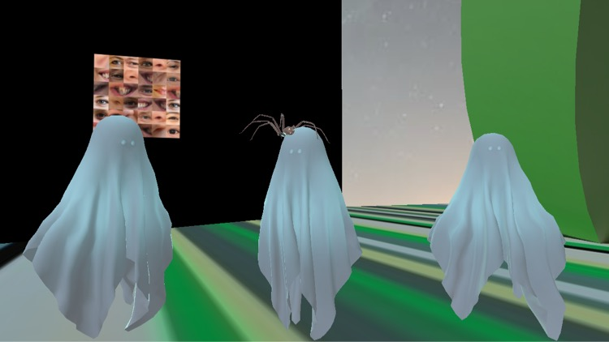

These Eyes

These-Eyes
is a live coding performance with an interactive component from the viewers.
A website is set up on Heroku to grab an image from
thispersondoesnotexist
periodically and scanned for eyes using OpenCV. These eyes are then constructed in a collage and presented on the top of the site
and dynamically updated. Optionally, the public can submit their own eyes by interacting with the site
these-eyes.herokuapp.com
and turning on their webcam.
During the live performance, this continually changing collection of eyes serves as our visual material to be manipulated in real
time using the live coding environment
Hydra
. While I improvised in Hydra,
Isaac Medina
coded the algorithmic sounds using
Tidalcycles
.

This project was presented in the Cyber Salon for the Piksel Festival held in Bergen, Norway.